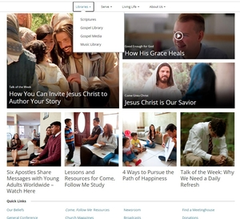

White Space and Clean Design
Nike
nike.comThe Nike page is a good example of white space and clean design. For example, throughout the home page we see some how each section has its own spot is is nicely spaced out. They probably used Grid or Flex-box to have each section evenly spread out. Near the bottom of the page, we see some selections for kids, shoes, clothing, and featured items. Each topic listed is evenly spread out and not too close together. They give enough space where they are not trying to fill space, but rather fill the section with the least amount of information as possible while still making it effective.
Repetition
Disney
disneyplus.com
The Disney + page is a good example of repetition. The reason why is because the logo of the site is almost everywhere. They place it at the top of the page, you can see it in the background, and you also see it on most of the shows in the selection. It definetly lets you know that you are on their streaming site!
Hick's Law
Jesus Christ of Latter-Day Saints
churchofjesuschrist.org This website demonstrates Hick's Law. Hick's law is basically making the selection for the user easier by not having too many options to choose from. If we look at the home page, we see that the church lets you choose from four different menu items. After choosing one item, more options will become avaiable for you to choose. Thus we see that the user will not have to see every option he or she can choose. but rather will only see the options that they want to see.